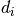

reconst¶
bench |
|
test |
Module: reconst.base¶
Base-classes for reconstruction models and reconstruction fits.
All the models in the reconst module follow the same template: a Model object is used to represent the abstract properties of the model, that are independent of the specifics of the data . These properties are reused whenver fitting a particular set of data (different voxels, for example).
ReconstFit(model, data) |
Abstract class which holds the fit result of ReconstModel |
ReconstModel(gtab) |
Abstract class for signal reconstruction models |
Module: reconst.benchmarks¶
Module: reconst.benchmarks.bench_bounding_box¶
bench_bounding_box |
|
bounding_box |
|
measure |
Module: reconst.benchmarks.bench_csd¶
ConstrainedSphericalDeconvModel |
|
GradientTable |
|
bench_csdeconv |
|
num_grad |
|
read_stanford_labels |
Module: reconst.benchmarks.bench_peaks¶
bench_local_maxima |
|
get_sphere |
|
local_maxima |
|
measure |
|
unique_edges |
Module: reconst.benchmarks.bench_squash¶
Benchmarks for fast squashing
Run all benchmarks with:
import dipy.reconst as dire
dire.bench()
If you have doctests enabled by default in nose (with a noserc file or environment variable), and you have a numpy version <= 1.6.1, this will also run the doctests, let’s hope they pass.
Run this benchmark with:
nosetests -s –match ‘(?:^|[b_.//-])[Bb]ench’ /path/to/bench_squash.py
bench_quick_squash() |
|
measure(code_str[, times, label]) |
Return elapsed time for executing code in the namespace of the caller. |
ndindex(shape) |
An N-dimensional iterator object to index arrays. |
old_squash(arr[, mask, fill]) |
Try and make a standard array from an object array |
quick_squash |
Try and make a standard array from an object array |
reduce((function, sequence[, initial]) -> value) |
Apply a function of two arguments cumulatively to the items of a sequence, from left to right, so as to reduce the sequence to a single value. |
Module: reconst.benchmarks.bench_vec_val_sum¶
Benchmarks for vec / val summation routine
Run benchmarks with:
import dipy.reconst as dire
dire.bench()
If you have doctests enabled by default in nose (with a noserc file or environment variable), and you have a numpy version <= 1.6.1, this will also run the doctests, let’s hope they pass.
bench_vec_val_vect() |
|
measure(code_str[, times, label]) |
Return elapsed time for executing code in the namespace of the caller. |
randn(d0, d1, ..., dn) |
Return a sample (or samples) from the “standard normal” distribution. |
vec_val_vect |
Vectorize vecs.diag(vals).`vecs`.T for last 2 dimensions of vecs |
with_einsum(f) |
Module: reconst.cache¶
Cache |
|
auto_attr |
Module: reconst.csdeconv¶
AxSymShResponse |
|
ConstrainedSDTModel |
|
ConstrainedSphericalDeconvModel |
|
SphHarmFit |
|
SphHarmModel |
|
TensorModel |
|
range |
|
auto_response |
|
cart2sphere |
|
csdeconv |
|
estimate_response |
|
fa_trace_to_lambdas |
|
forward_sdeconv_mat |
|
forward_sdt_deconv_mat |
|
fractional_anisotropy |
|
get_sphere |
|
lazy_index |
|
lpn |
|
multi_voxel_fit |
|
ndindex |
|
odf_deconv |
|
odf_sh_to_sharp |
|
peaks_from_model |
|
quad |
|
real_sph_harm |
|
real_sym_sh_basis |
|
recursive_response |
|
response_from_mask |
|
sh_to_rh |
|
single_tensor |
|
sph_harm_ind_list |
|
vec2vec_rotmat |
Module: reconst.dki¶
DiffusionKurtosisFit |
|
DiffusionKurtosisModel |
|
ReconstModel |
|
TensorFit |
|
range |
|
Wcons |
|
Wrotate |
|
Wrotate_element |
|
apparent_kurtosis_coef |
|
auto_attr |
|
axial_diffusivity |
|
axial_kurtosis |
|
carlson_rd |
|
carlson_rf |
|
decompose_tensor |
|
design_matrix |
|
dki_prediction |
|
from_lower_triangular |
|
lower_triangular |
|
mean_diffusivity |
|
mean_kurtosis |
|
ndindex |
|
ols_fit_dki |
|
radial_diffusivity |
|
radial_kurtosis |
|
split_dki_param |
|
wls_fit_dki |
Module: reconst.dsi¶
Cache |
|
DiffusionSpectrumDeconvFit |
|
DiffusionSpectrumDeconvModel |
|
DiffusionSpectrumFit |
|
DiffusionSpectrumModel |
|
OdfFit |
|
OdfModel |
|
LR_deconv |
|
create_qspace |
|
create_qtable |
|
fftn |
|
fftshift |
|
gen_PSF |
|
half_to_full_qspace |
|
hanning_filter |
|
ifftshift |
|
map_coordinates |
|
multi_voxel_fit |
|
pdf_interp_coords |
|
pdf_odf |
|
project_hemisph_bvecs |
|
threshold_propagator |
Module: reconst.dti¶
Classes and functions for fitting tensors
ReconstModel |
|
Sphere |
|
TensorFit |
|
TensorModel |
|
range |
|
apparent_diffusion_coef |
|
auto_attr |
|
axial_diffusivity |
|
color_fa |
|
decompose_tensor(tensor) |
Returns eigenvalues and eigenvectors given a diffusion tensor |
design_matrix(gtab, bval[, dtype]) |
Constructs design matrix for DTI weighted least squares or least squares fitting. |
determinant |
|
deviatoric |
|
eig_from_lo_tri |
|
eigh |
|
fractional_anisotropy |
|
from_lower_triangular |
|
geodesic_anisotropy |
|
get_sphere([name]) |
provide triangulated spheres |
gradient_table |
|
isotropic |
|
iter_fit_tensor |
|
linearity |
|
lower_triangular |
|
mean_diffusivity |
|
mode |
|
nlls_fit_tensor |
|
norm |
|
ols_fit_tensor(design_matrix, data[, min_signal]) |
Computes ordinary least squares (OLS) fit to calculate self-diffusion tensor using a linear regression model [1]. |
pinv |
|
planarity |
|
quantize_evecs(evecs[, odf_vertices]) |
Find the closest orientation of an evenly distributed sphere |
radial_diffusivity |
|
restore_fit_tensor |
|
sphericity |
|
tensor_prediction |
|
trace |
program/module to trace Python program or function execution |
vec_val_vect |
|
vector_norm |
|
wls_fit_tensor(design_matrix, data[, min_signal]) |
Computes weighted least squares (WLS) fit to calculate self-diffusion tensor using a linear regression model [1]. |
Module: reconst.gqi¶
Classes and functions for generalized q-sampling
Cache |
|
GeneralizedQSamplingFit |
|
GeneralizedQSamplingModel |
|
OdfFit |
|
OdfModel |
|
equatorial_maximum(vertices, odf, pole, width) |
|
equatorial_zone_vertices(vertices, pole[, width]) |
finds the ‘vertices’ in the equatorial zone conjugate |
gfa |
|
local_maxima |
|
multi_voxel_fit |
|
normalize_qa |
|
npa |
|
odf_sum |
|
patch_maximum(vertices, odf, pole, width) |
|
patch_sum |
|
patch_vertices(vertices, pole, width) |
find ‘vertices’ within the cone of ‘width’ degrees around ‘pole’ |
polar_zone_vertices(vertices, pole[, width]) |
finds the ‘vertices’ in the equatorial band around |
remove_similar_vertices |
|
squared_radial_component |
|
triple_odf_maxima(vertices, odf, width) |
|
upper_hemi_map(v) |
maps a 3-vector into the z-upper hemisphere |
Module: reconst.interpolate¶
Interpolator |
|
NearestNeighborInterpolator |
|
OutsideImage |
|
TriLinearInterpolator |
|
array |
This module defines an object type which can efficiently represent an array of basic values: characters, integers, floating point numbers. |
trilinear_interp |
Module: reconst.mapmri¶
MapmriFit |
|
MapmriModel |
|
ReconstFit |
|
ReconstModel |
|
b_mat |
|
create_rspace |
|
factorial |
|
factorial2 |
|
gradient_table |
|
hermite |
|
mapmri_EAP |
|
mapmri_index_matrix |
|
mapmri_odf_matrix |
|
mapmri_phi_1d |
|
mapmri_phi_3d |
|
mapmri_phi_matrix |
|
mapmri_psi_1d |
|
mapmri_psi_3d |
|
mapmri_psi_matrix |
|
multi_voxel_fit |
|
optional_package |
|
warn |
Module: reconst.multi_voxel¶
Tools to easily make multi voxel models
CallableArray |
An array which can be called like a function |
MultiVoxelFit(model, fit_array, mask) |
Holds an array of fits and allows access to their attributes and |
ReconstFit(model, data) |
Abstract class which holds the fit result of ReconstModel |
as_strided(x[, shape, strides, subok]) |
Make an ndarray from the given array with the given shape and strides. |
multi_voxel_fit(single_voxel_fit) |
Method decorator to turn a single voxel model fit |
ndindex(shape) |
An N-dimensional iterator object to index arrays. |
Module: reconst.odf¶
OdfFit(model, data) |
Methods |
OdfModel(gtab) |
An abstract class to be sub-classed by specific odf models |
ReconstFit(model, data) |
Abstract class which holds the fit result of ReconstModel |
ReconstModel(gtab) |
Abstract class for signal reconstruction models |
gfa(samples) |
The general fractional anisotropy of a function evaluated |
minmax_normalize(samples[, out]) |
Min-max normalization of a function evaluated on the unit sphere |
Module: reconst.peaks¶
HemiSphere |
|
InTemporaryDirectory |
|
PeaksAndMetrics |
|
PeaksAndMetricsDirectionGetter |
|
Sphere |
|
repeat |
|
xrange |
|
Pool |
|
cpu_count |
|
gfa |
|
local_maxima |
|
ndindex |
|
peak_directions |
|
peak_directions_nl |
|
peaks_from_model |
|
remove_similar_vertices |
|
reshape_peaks_for_visualization |
|
search_descending |
|
sh_to_sf_matrix |
|
warn |
Module: reconst.sfm¶
Cache |
|
ExponentialIsotropicFit |
|
ExponentialIsotropicModel |
|
IsotropicFit |
|
IsotropicModel |
|
ReconstFit |
|
ReconstModel |
|
SparseFascicleFit |
|
SparseFascicleModel |
|
auto_attr |
|
nanmean |
|
optional_package |
|
sfm_design_matrix |
Module: reconst.shm¶
Cache |
|
CsaOdfModel |
|
LooseVersion |
|
OdfFit |
|
OdfModel |
|
OpdtModel |
|
QballBaseModel |
|
QballModel |
|
ResidualBootstrapWrapper |
|
SphHarmFit |
|
SphHarmModel |
|
anisotropic_power |
|
auto_attr |
|
bootstrap_data_array |
|
bootstrap_data_voxel |
|
calculate_max_order |
|
cart2sphere |
|
concatenate |
|
diag |
|
diff |
|
dot |
|
empty |
|
eye |
|
forward_sdeconv_mat |
|
gen_dirac |
|
hat |
|
lazy_index |
|
lcr_matrix |
|
lpn |
|
normalize_data |
|
order_from_ncoef |
|
pinv |
|
randint |
|
real_sph_harm |
|
real_sym_sh_basis |
|
real_sym_sh_mrtrix |
|
sf_to_sh |
|
sh_to_rh |
|
sh_to_sf |
|
sh_to_sf_matrix |
|
smooth_pinv |
|
sph_harm_ind_list |
|
spherical_harmonics |
|
svd |
|
unique |
Module: reconst.shore¶
Cache |
|
ShoreFit |
|
ShoreModel |
|
cart2sphere |
|
create_rspace |
|
factorial |
|
genlaguerre |
|
l_shore |
|
multi_voxel_fit |
|
n_shore |
|
optional_package |
|
real_sph_harm |
|
shore_indices |
|
shore_matrix |
|
shore_matrix_odf |
|
shore_matrix_pdf |
|
shore_order |
|
warn |
bench¶
test¶
bench_bounding_box¶
bounding_box¶
measure¶
ConstrainedSphericalDeconvModel¶
GradientTable¶
bench_csdeconv¶
num_grad¶
read_stanford_labels¶
bench_local_maxima¶
get_sphere¶
local_maxima¶
measure¶
unique_edges¶
measure¶
-
dipy.reconst.benchmarks.bench_squash.measure(code_str, times=1, label=None)¶ Return elapsed time for executing code in the namespace of the caller.
The supplied code string is compiled with the Python builtin
compile. The precision of the timing is 10 milli-seconds. If the code will execute fast on this timescale, it can be executed many times to get reasonable timing accuracy.Parameters: code_str : str
The code to be timed.
times : int, optional
The number of times the code is executed. Default is 1. The code is only compiled once.
label : str, optional
A label to identify code_str with. This is passed into
compileas the second argument (for run-time error messages).Returns: elapsed : float
Total elapsed time in seconds for executing code_str times times.
Examples
>>> etime = np.testing.measure('for i in range(1000): np.sqrt(i**2)', ... times=times) >>> print "Time for a single execution : ", etime / times, "s" Time for a single execution : 0.005 s
ndindex¶
-
dipy.reconst.benchmarks.bench_squash.ndindex(shape)¶ An N-dimensional iterator object to index arrays.
Given the shape of an array, an ndindex instance iterates over the N-dimensional index of the array. At each iteration a tuple of indices is returned; the last dimension is iterated over first.
Parameters: shape : tuple of ints
The dimensions of the array.
Examples
>>> from dipy.core.ndindex import ndindex >>> shape = (3, 2, 1) >>> for index in ndindex(shape): ... print(index) (0, 0, 0) (0, 1, 0) (1, 0, 0) (1, 1, 0) (2, 0, 0) (2, 1, 0)
old_squash¶
-
dipy.reconst.benchmarks.bench_squash.old_squash(arr, mask=None, fill=0)¶ Try and make a standard array from an object array
This function takes an object array and attempts to convert it to a more useful dtype. If array can be converted to a better dtype, Nones are replaced by fill. To make the behaviour of this function more clear, here are the most common cases:
- arr is an array of scalars of type T. Returns an array like arr.astype(T)
- arr is an array of arrays. All items in arr have the same shape S. Returns an array with shape arr.shape + S.
- arr is an array of arrays of different shapes. Returns arr.
- Items in arr are not ndarrys or scalars. Returns arr.
Parameters: arr : array, dtype=object
The array to be converted.
mask : array, dtype=bool, optional
Where arr has Nones.
fill : number, optional
Nones are replaced by fill.
Returns: result : array
Examples
>>> arr = np.empty(3, dtype=object) >>> arr.fill(2) >>> old_squash(arr) array([2, 2, 2]) >>> arr[0] = None >>> old_squash(arr) array([0, 2, 2]) >>> arr.fill(np.ones(2)) >>> r = old_squash(arr) >>> r.shape == (3, 2) True >>> r.dtype dtype('float64')
quick_squash¶
-
dipy.reconst.benchmarks.bench_squash.quick_squash()¶ Try and make a standard array from an object array
This function takes an object array and attempts to convert it to a more useful dtype. If array can be converted to a better dtype, Nones are replaced by fill. To make the behaviour of this function more clear, here are the most common cases:
- obj_arr is an array of scalars of type T. Returns an array like obj_arr.astype(T)
- obj_arr is an array of arrays. All items in obj_arr have the same
shape
S. Returns an array with shapeobj_arr.shape + S - obj_arr is an array of arrays of different shapes. Returns obj_arr.
- Items in obj_arr are not ndarrays or scalars. Returns obj_arr.
Parameters: obj_arr : array, dtype=object
The array to be converted.
mask : array, dtype=bool, optional
mask is nonzero where obj_arr has Nones.
fill : number, optional
Nones are replaced by fill.
Returns: result : array
Examples
>>> arr = np.empty(3, dtype=object) >>> arr.fill(2) >>> quick_squash(arr) array([2, 2, 2]) >>> arr[0] = None >>> quick_squash(arr) array([0, 2, 2]) >>> arr.fill(np.ones(2)) >>> r = quick_squash(arr) >>> r.shape (3, 2) >>> r.dtype dtype('float64')
reduce¶
-
dipy.reconst.benchmarks.bench_squash.reduce(function, sequence[, initial]) → value¶ Apply a function of two arguments cumulatively to the items of a sequence, from left to right, so as to reduce the sequence to a single value. For example, reduce(lambda x, y: x+y, [1, 2, 3, 4, 5]) calculates ((((1+2)+3)+4)+5). If initial is present, it is placed before the items of the sequence in the calculation, and serves as a default when the sequence is empty.
measure¶
-
dipy.reconst.benchmarks.bench_vec_val_sum.measure(code_str, times=1, label=None)¶ Return elapsed time for executing code in the namespace of the caller.
The supplied code string is compiled with the Python builtin
compile. The precision of the timing is 10 milli-seconds. If the code will execute fast on this timescale, it can be executed many times to get reasonable timing accuracy.Parameters: code_str : str
The code to be timed.
times : int, optional
The number of times the code is executed. Default is 1. The code is only compiled once.
label : str, optional
A label to identify code_str with. This is passed into
compileas the second argument (for run-time error messages).Returns: elapsed : float
Total elapsed time in seconds for executing code_str times times.
Examples
>>> etime = np.testing.measure('for i in range(1000): np.sqrt(i**2)', ... times=times) >>> print "Time for a single execution : ", etime / times, "s" Time for a single execution : 0.005 s
randn¶
-
dipy.reconst.benchmarks.bench_vec_val_sum.randn(d0, d1, ..., dn)¶ Return a sample (or samples) from the “standard normal” distribution.
If positive, int_like or int-convertible arguments are provided, randn generates an array of shape
(d0, d1, ..., dn), filled with random floats sampled from a univariate “normal” (Gaussian) distribution of mean 0 and variance 1 (if any of the  are floats, they are first converted to integers by truncation). A single float randomly sampled from the distribution is returned if no argument is provided.This is a convenience function. If you want an interface that takes a tuple as the first argument, use numpy.random.standard_normal instead.
Parameters: d0, d1, ..., dn : int, optional
The dimensions of the returned array, should be all positive. If no argument is given a single Python float is returned.
Returns: Z : ndarray or float
A
(d0, d1, ..., dn)-shaped array of floating-point samples from the standard normal distribution, or a single such float if no parameters were supplied.See also
random.standard_normal- Similar, but takes a tuple as its argument.
Notes
For random samples from
 , use:
, use:sigma * np.random.randn(...) + muExamples
>>> np.random.randn() 2.1923875335537315 #random
Two-by-four array of samples from N(3, 6.25):
>>> 2.5 * np.random.randn(2, 4) + 3 array([[-4.49401501, 4.00950034, -1.81814867, 7.29718677], #random [ 0.39924804, 4.68456316, 4.99394529, 4.84057254]]) #random
vec_val_vect¶
-
dipy.reconst.benchmarks.bench_vec_val_sum.vec_val_vect()¶ Vectorize vecs.diag(vals).`vecs`.T for last 2 dimensions of vecs
Parameters: vecs : shape (..., M, N) array
containing tensor in last two dimensions; M, N usually equal to (3, 3)
vals : shape (..., N) array
diagonal values carried in last dimension,
...shape above must match that for vecsReturns: res : shape (..., M, M) array
For all the dimensions ellided by
..., loops to get (M, N)vecmatrix, and (N,)valsvector, and calculatesvec.dot(np.diag(val).dot(vec.T).Raises: ValueError : non-matching
...dimensions of vecs, valsValueError : non-matching
Ndimensions of vecs, valsExamples
Make a 3D array where the first dimension is only 1
>>> vecs = np.arange(9).reshape((1, 3, 3)) >>> vals = np.arange(3).reshape((1, 3)) >>> vec_val_vect(vecs, vals) array([[[ 9., 24., 39.], [ 24., 66., 108.], [ 39., 108., 177.]]])
That’s the same as the 2D case (apart from the float casting):
>>> vecs = np.arange(9).reshape((3, 3)) >>> vals = np.arange(3) >>> np.dot(vecs, np.dot(np.diag(vals), vecs.T)) array([[ 9, 24, 39], [ 24, 66, 108], [ 39, 108, 177]])
Cache¶
auto_attr¶
range¶
coeff_of_determination¶
kfold_xval¶
AxSymShResponse¶
ConstrainedSDTModel¶
ConstrainedSphericalDeconvModel¶
SphHarmFit¶
SphHarmModel¶
TensorModel¶
range¶
auto_response¶
cart2sphere¶
csdeconv¶
estimate_response¶
fa_trace_to_lambdas¶
forward_sdeconv_mat¶
forward_sdt_deconv_mat¶
fractional_anisotropy¶
get_sphere¶
lazy_index¶
lpn¶
multi_voxel_fit¶
ndindex¶
odf_deconv¶
odf_sh_to_sharp¶
peaks_from_model¶
quad¶
real_sph_harm¶
real_sym_sh_basis¶
recursive_response¶
response_from_mask¶
sh_to_rh¶
single_tensor¶
sph_harm_ind_list¶
vec2vec_rotmat¶
DiffusionKurtosisFit¶
DiffusionKurtosisModel¶
ReconstModel¶
TensorFit¶
range¶
Wcons¶
Wrotate¶
Wrotate_element¶
apparent_kurtosis_coef¶
auto_attr¶
axial_diffusivity¶
axial_kurtosis¶
carlson_rd¶
carlson_rf¶
decompose_tensor¶
design_matrix¶
dki_prediction¶
from_lower_triangular¶
lower_triangular¶
mean_diffusivity¶
mean_kurtosis¶
ndindex¶
ols_fit_dki¶
radial_diffusivity¶
radial_kurtosis¶
split_dki_param¶
wls_fit_dki¶
Cache¶
DiffusionSpectrumDeconvFit¶
DiffusionSpectrumDeconvModel¶
DiffusionSpectrumFit¶
DiffusionSpectrumModel¶
OdfFit¶
OdfModel¶
LR_deconv¶
create_qspace¶
create_qtable¶
fftn¶
fftshift¶
gen_PSF¶
half_to_full_qspace¶
hanning_filter¶
ifftshift¶
map_coordinates¶
multi_voxel_fit¶
pdf_interp_coords¶
pdf_odf¶
project_hemisph_bvecs¶
threshold_propagator¶
ReconstModel¶
Sphere¶
TensorFit¶
TensorModel¶
range¶
apparent_diffusion_coef¶
auto_attr¶
axial_diffusivity¶
color_fa¶
decompose_tensor¶
-
dipy.reconst.dti.decompose_tensor(tensor)¶ Returns eigenvalues and eigenvectors given a diffusion tensor
Computes tensor eigen decomposition to calculate eigenvalues and eigenvectors of self-diffusion tensor. (Basser et al., 1994a)
Parameters: D : array (3,3)
array holding a tensor. Assumes D has units on order of ~ 10^-4 mm^2/s
Returns: eigvals : array (3,)
Eigenvalues from eigen decomposition of the tensor. Negative eigenvalues are replaced by zero. Sorted from largest to smallest.
eigvecs : array (3,3)
Associated eigenvectors from eigen decomposition of the tensor. Eigenvectors are columnar (e.g. eigvecs[:,j] is associated with eigvals[j])
See also
numpy.linalg.eig
design_matrix¶
-
dipy.reconst.dti.design_matrix(gtab, bval, dtype=None)¶ Constructs design matrix for DTI weighted least squares or least squares fitting. (Basser et al., 1994a)
Parameters: gtab : array with shape (3,g)
Diffusion gradient table found in DICOM header as a numpy array.
bval : array with shape (g,)
Diffusion weighting factor b for each vector in gtab.
dtype : string
Parameter to control the dtype of returned designed matrix
Returns: design_matrix : array (g,7)
Design matrix or B matrix assuming Gaussian distributed tensor model. Note: design_matrix[j,:] = (Bxx,Byy,Bzz,Bxy,Bxz,Byz,dummy)
determinant¶
deviatoric¶
eig_from_lo_tri¶
eigh¶
fractional_anisotropy¶
from_lower_triangular¶
geodesic_anisotropy¶
get_sphere¶
-
dipy.reconst.dti.get_sphere(name='symmetric363')¶ provide triangulated spheres
Parameters: name : str
which sphere - one of: * ‘symmetric362’ * ‘symmetric642’
Returns: vertices : ndarray
vertices for sphere
faces : ndarray
faces
Examples
>>> import numpy as np >>> from dipy.data import get_sphere >>> verts, faces = get_sphere('symmetric362') >>> verts.shape (362, 3) >>> faces.shape (720, 3) >>> verts, faces = get_sphere('not a sphere name') Traceback (most recent call last): ... DataError: No sphere called "not a sphere name"
gradient_table¶
isotropic¶
iter_fit_tensor¶
linearity¶
lower_triangular¶
mean_diffusivity¶
mode¶
nlls_fit_tensor¶
norm¶
ols_fit_tensor¶
-
dipy.reconst.dti.ols_fit_tensor(design_matrix, data, min_signal=1)¶ Computes ordinary least squares (OLS) fit to calculate self-diffusion tensor using a linear regression model [1].
Parameters: design_matrix : array (g, 7)
Design matrix holding the covariants used to solve for the regression coefficients. Use design_matrix to build a valid design matrix from bvalues and a gradient table.
data : array ([X, Y, Z, ...], g)
Data or response variables holding the data. Note that the last dimension should contain the data. It makes no copies of data.
min_signal : default = 1
All values below min_signal are repalced with min_signal. This is done in order to avaid taking log(0) durring the tensor fitting.
Returns: eigvals : array (..., 3)
Eigenvalues from eigen decomposition of the tensor.
eigvecs : array (..., 3, 3)
Associated eigenvectors from eigen decomposition of the tensor. Eigenvectors are columnar (e.g. eigvecs[:,j] is associated with eigvals[j])
See also
WLS_fit_tensor,decompose_tensor,design_matrixNotes
This function is offered mainly as a quick comparison to WLS.

References
[1] (1, 2, 3, 4) Chung, SW., Lu, Y., Henry, R.G., 2006. Comparison of bootstrap approaches for estimation of uncertainties of DTI parameters. NeuroImage 33, 531-541.
pinv¶
planarity¶
quantize_evecs¶
-
dipy.reconst.dti.quantize_evecs(evecs, odf_vertices=None)¶ Find the closest orientation of an evenly distributed sphere
Parameters: evecs : ndarray
odf_vertices : None or ndarray
If None, then set vertices from symmetric362 sphere. Otherwise use passed ndarray as vertices
Returns: IN : ndarray
radial_diffusivity¶
restore_fit_tensor¶
sphericity¶
tensor_prediction¶
trace¶
vec_val_vect¶
vector_norm¶
wls_fit_tensor¶
-
dipy.reconst.dti.wls_fit_tensor(design_matrix, data, min_signal=1)¶ Computes weighted least squares (WLS) fit to calculate self-diffusion tensor using a linear regression model [1].
Parameters: design_matrix : array (g, 7)
Design matrix holding the covariants used to solve for the regression coefficients.
data : array ([X, Y, Z, ...], g)
Data or response variables holding the data. Note that the last dimension should contain the data. It makes no copies of data.
min_signal : default = 1
All values below min_signal are repalced with min_signal. This is done in order to avaid taking log(0) durring the tensor fitting.
Returns: eigvals : array (..., 3)
Eigenvalues from eigen decomposition of the tensor.
eigvecs : array (..., 3, 3)
Associated eigenvectors from eigen decomposition of the tensor. Eigenvectors are columnar (e.g. eigvecs[:,j] is associated with eigvals[j])
See also
Notes
In Chung, et al. 2006, the regression of the WLS fit needed an unbiased preliminary estimate of the weights and therefore the ordinary least squares (OLS) estimates were used. A “two pass” method was implemented:
- calculate OLS estimates of the data
- apply the OLS estimates as weights to the WLS fit of the data
This ensured heteroscadasticity could be properly modeled for various types of bootstrap resampling (namely residual bootstrap).

References
Cache¶
GeneralizedQSamplingFit¶
GeneralizedQSamplingModel¶
OdfFit¶
OdfModel¶
equatorial_zone_vertices¶
-
dipy.reconst.gqi.equatorial_zone_vertices(vertices, pole, width=5)¶ finds the ‘vertices’ in the equatorial zone conjugate to ‘pole’ with width half ‘width’ degrees
gfa¶
local_maxima¶
multi_voxel_fit¶
normalize_qa¶
npa¶
odf_sum¶
patch_sum¶
patch_vertices¶
-
dipy.reconst.gqi.patch_vertices(vertices, pole, width)¶ find ‘vertices’ within the cone of ‘width’ degrees around ‘pole’
polar_zone_vertices¶
-
dipy.reconst.gqi.polar_zone_vertices(vertices, pole, width=5)¶ finds the ‘vertices’ in the equatorial band around the ‘pole’ of radius ‘width’ degrees
remove_similar_vertices¶
squared_radial_component¶
Interpolator¶
NearestNeighborInterpolator¶
OutsideImage¶
TriLinearInterpolator¶
array¶
trilinear_interp¶
MapmriFit¶
MapmriModel¶
ReconstFit¶
ReconstModel¶
b_mat¶
create_rspace¶
factorial¶
factorial2¶
gradient_table¶
hermite¶
mapmri_EAP¶
mapmri_index_matrix¶
mapmri_odf_matrix¶
mapmri_phi_1d¶
mapmri_phi_3d¶
mapmri_phi_matrix¶
mapmri_psi_1d¶
mapmri_psi_3d¶
mapmri_psi_matrix¶
multi_voxel_fit¶
optional_package¶
warn¶
CallableArray¶
-
class
dipy.reconst.multi_voxel.CallableArray¶ Bases:
numpy.ndarrayAn array which can be called like a function
Methods
all([axis, out, keepdims])Returns True if all elements evaluate to True. any([axis, out, keepdims])Returns True if any of the elements of a evaluate to True. argmax([axis, out])Return indices of the maximum values along the given axis. argmin([axis, out])Return indices of the minimum values along the given axis of a. argpartition(kth[, axis, kind, order])Returns the indices that would partition this array. argsort([axis, kind, order])Returns the indices that would sort this array. astype(dtype[, order, casting, subok, copy])Copy of the array, cast to a specified type. byteswap(inplace)Swap the bytes of the array elements choose(choices[, out, mode])Use an index array to construct a new array from a set of choices. clip([min, max, out])Return an array whose values are limited to [min, max].compress(condition[, axis, out])Return selected slices of this array along given axis. conj()Complex-conjugate all elements. conjugate()Return the complex conjugate, element-wise. copy([order])Return a copy of the array. cumprod([axis, dtype, out])Return the cumulative product of the elements along the given axis. cumsum([axis, dtype, out])Return the cumulative sum of the elements along the given axis. diagonal([offset, axis1, axis2])Return specified diagonals. dot(b[, out])Dot product of two arrays. dump(file)Dump a pickle of the array to the specified file. dumps()Returns the pickle of the array as a string. fill(value)Fill the array with a scalar value. flatten([order])Return a copy of the array collapsed into one dimension. getfield(dtype[, offset])Returns a field of the given array as a certain type. item(*args)Copy an element of an array to a standard Python scalar and return it. itemset(*args)Insert scalar into an array (scalar is cast to array’s dtype, if possible) max([axis, out])Return the maximum along a given axis. mean([axis, dtype, out, keepdims])Returns the average of the array elements along given axis. min([axis, out, keepdims])Return the minimum along a given axis. newbyteorder([new_order])Return the array with the same data viewed with a different byte order. nonzero()Return the indices of the elements that are non-zero. partition(kth[, axis, kind, order])Rearranges the elements in the array in such a way that value of the element in kth position is in the position it would be in a sorted array. prod([axis, dtype, out, keepdims])Return the product of the array elements over the given axis ptp([axis, out])Peak to peak (maximum - minimum) value along a given axis. put(indices, values[, mode])Set a.flat[n] = values[n]for all n in indices.ravel([order])Return a flattened array. repeat(repeats[, axis])Repeat elements of an array. reshape(shape[, order])Returns an array containing the same data with a new shape. resize(new_shape[, refcheck])Change shape and size of array in-place. round([decimals, out])Return a with each element rounded to the given number of decimals. searchsorted(v[, side, sorter])Find indices where elements of v should be inserted in a to maintain order. setfield(val, dtype[, offset])Put a value into a specified place in a field defined by a data-type. setflags([write, align, uic])Set array flags WRITEABLE, ALIGNED, and UPDATEIFCOPY, respectively. sort([axis, kind, order])Sort an array, in-place. squeeze([axis])Remove single-dimensional entries from the shape of a. std([axis, dtype, out, ddof, keepdims])Returns the standard deviation of the array elements along given axis. sum([axis, dtype, out, keepdims])Return the sum of the array elements over the given axis. swapaxes(axis1, axis2)Return a view of the array with axis1 and axis2 interchanged. take(indices[, axis, out, mode])Return an array formed from the elements of a at the given indices. tobytes([order])Construct Python bytes containing the raw data bytes in the array. tofile(fid[, sep, format])Write array to a file as text or binary (default). tolist()Return the array as a (possibly nested) list. tostring([order])Construct Python bytes containing the raw data bytes in the array. trace([offset, axis1, axis2, dtype, out])Return the sum along diagonals of the array. transpose(*axes)Returns a view of the array with axes transposed. var([axis, dtype, out, ddof, keepdims])Returns the variance of the array elements, along given axis. view([dtype, type])New view of array with the same data. -
__init__()¶ x.__init__(...) initializes x; see help(type(x)) for signature
-
MultiVoxelFit¶
-
class
dipy.reconst.multi_voxel.MultiVoxelFit(model, fit_array, mask)¶ Bases:
dipy.reconst.base.ReconstFitHolds an array of fits and allows access to their attributes and methods
Methods
predict(*args, **kwargs)Predict for the multi-voxel object using each single-object’s prediction API, with S0 provided from an array. -
__init__(model, fit_array, mask)¶
-
predict(*args, **kwargs)¶ Predict for the multi-voxel object using each single-object’s prediction API, with S0 provided from an array.
-
shape¶
-
as_strided¶
-
dipy.reconst.multi_voxel.as_strided(x, shape=None, strides=None, subok=False)¶ Make an ndarray from the given array with the given shape and strides.
multi_voxel_fit¶
-
dipy.reconst.multi_voxel.multi_voxel_fit(single_voxel_fit)¶ Method decorator to turn a single voxel model fit definition into a multi voxel model fit definition
ndindex¶
-
dipy.reconst.multi_voxel.ndindex(shape)¶ An N-dimensional iterator object to index arrays.
Given the shape of an array, an ndindex instance iterates over the N-dimensional index of the array. At each iteration a tuple of indices is returned; the last dimension is iterated over first.
Parameters: shape : tuple of ints
The dimensions of the array.
Examples
>>> from dipy.core.ndindex import ndindex >>> shape = (3, 2, 1) >>> for index in ndindex(shape): ... print(index) (0, 0, 0) (0, 1, 0) (1, 0, 0) (1, 1, 0) (2, 0, 0) (2, 1, 0)
OdfFit¶
-
class
dipy.reconst.odf.OdfFit(model, data)¶ Bases:
dipy.reconst.base.ReconstFitMethods
odf(sphere)To be implemented but specific odf models -
__init__(model, data)¶
-
odf(sphere)¶ To be implemented but specific odf models
-
OdfModel¶
-
class
dipy.reconst.odf.OdfModel(gtab)¶ Bases:
dipy.reconst.base.ReconstModelAn abstract class to be sub-classed by specific odf models
All odf models should provide a fit method which may take data as it’s first and only argument.
Methods
fit(data)To be implemented by specific odf models -
__init__(gtab)¶
-
fit(data)¶ To be implemented by specific odf models
-
gfa¶
-
dipy.reconst.odf.gfa(samples)¶ The general fractional anisotropy of a function evaluated on the unit sphere
minmax_normalize¶
-
dipy.reconst.odf.minmax_normalize(samples, out=None)¶ Min-max normalization of a function evaluated on the unit sphere
Normalizes samples to
(samples - min(samples)) / (max(samples) - min(samples))for each unit sphere.Parameters: samples : ndarray (..., N)
N samples on a unit sphere for each point, stored along the last axis of the array.
out : ndrray (..., N), optional
An array to store the normalized samples.
Returns: out : ndarray, (..., N)
Normalized samples.